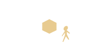

ENTLY
TETSUSON 2017 募集要項
出展者登録の前に、お読みください。
出展のながれ
会場紹介

3331 Arts Chiyoda
メインギャラリー
www.3331.jp
3331 Arts Chiyodaは、東京都千代田区外神田に位置し、東京メトロ銀座線末広町駅から徒歩1分、
JR秋葉原駅から徒歩8分ととてもアクセスのいい会場です。
廃校になった中学校をコンバージョンした
この施設は、施設の前が公園となっていることや、私たちがお借りするメインギャラリーの他にも、
小さなギャラリーをいくつも併設しているため、さまざまな方にご来場いただけます。
展示会場について
- 展示会場は、天井、壁、床、全面が真っ白なホワイト・キューブの空間と、それに隣接する、床のみ木目を使用した空間の２種類があります。（詳しくは会場紹介をご覧ください。）
- 木目を使用した空間については、消灯した暗い展示空間を予定しておりますので、映像作品など暗所をご希望の作品はこちらでの展示になるかと思われます。
- 作品の展示位置、会場レイアウトはこちらで決めさせていただきますので、ご了承ください。
展示作品のサイズ規定について
- 高さ ：2.7m以下
- 展示面積：約2.7m × 2.7m以内
（規定サイズを超える作品の場合はご相談ください）
備品について
- 基本的に作品展示に必要な備品（プロジェクター、モニター、延長ケーブルの類や、虫ピン、釘、テープなどの消耗品、ドライバー、ドリルなどの工具ほか）は全て出展者様でご用意いただきますようお願いいたします。
展示台について
- 展示台は少数のご用意がございますが、原則持ち込みをお願いいたします。
どうしても展示台のサイズ及び素材をご連絡いただき、ご希望に添える展示台のご用意があった場合にのみ貸し出しとさせていただきます。
なお、数に限りがございますので、先着順となりますことをご了承ください。
展示方法について
- 主な展示パターンは以下の通りです。下記に該当しない展示方法を希望させる場合は個別にご相談ください。
-
A.壁面

-
B.展示台
-
C.展示台 + 壁面
-
D.床
-
E.床 + 壁面
-
F.吊り下げ
 -
G.吊り下げ + 壁面

- 壁面・床面などへの貼り付けを行う場合は、必ず会場施設に面する部分に養生テープを貼った上に他の接着剤をご利用ください。
（ひっつき虫、カッティングシートは可）なお、その際のテープ・接着剤の類は出展者様でご用意をお願いいたします。 - 壁面への貼り付けの際は、展示物が落下する恐れがあるため虫ピンなどの併用をおすすめします。
- 壁面は釘・虫ピン・ビスなどの利用が可能です。床面への穴あけ（釘などの使用）はできません。
- 吊り下げをご希望の方は方は会場に元よりある天井穴(60 - 80cm 間隔で等間隔にあります)、およびダクトレールなどを利用していただくこととなるため、展示可能な重さに限界があります。ご希望の方は必ずデータシートに重さ及び吊り下げ方法のご記入をお願いします。
- ※会場は火気・水気・異臭の発生する可能性のあるものは厳禁となります。
キャプションについて
- TETSUSON2017スタッフより氏名、学校名、作品名などを記載したキャプションを統一でご用意させていただきます。
電波状況について
- 有線でのご案内をしております。希望の方はデータシートにご記入の上ご相談ください。
（当会場で無線をご利用の場合は電波が安定を保証できません）
音の出る展示作品について
- 映像作品は他の映像作品と隣接する場合がありますので、他の作品の音が気になる方はヘッドホンのご用意をお願いします。
- 大きな音の出る展示作品の場合は、他の出展者様の展示作品との関係上ご遠慮いただく場合がございます。あらかじめご了承ください。
搬入・搬出にあたって
- 搬入は 3/8(火)・3/9(水)8:00~20:30(21:00 完全撤収)です。
- お車での搬入・搬出をご希望の場合は 2/23までのご連絡をお願いします。
- 原則出展者様による直接搬入・搬出ですが、どうしても都合が合わず郵送を希望される方は個別にご相談ください。
- 搬入出に使用する梱包材のお預かりについて、ダンボールなど大きなものは畳んだ状態でのお預かりとなります。その際使用するガムテープなどはご持参ください。また、梱包材は他の出展者さまの物と混同する恐れがあるため、なるべくおまとめの上、必ずお名前を明記いただきますようお願いいたします。
- 畳めない大きな梱包材を持ち込み予定の方は事前にご相談ください。
ゴミ処理について
- 搬入・搬出等で出たゴミは出展者様ご自身でお持ち帰りくださりますようお願いいたします。もしその場での廃棄をご希望の方はご相談ください。有料にてご案内いたします。
出展料の支払いについて
- 現金振り込みとなります。なお、その際の手数料は出展者様にご負担いただきますようお願い申し上げます。
webへの情報掲載について
- 出展者様のお名前・大学名・並びに作品情報（作品写真 含む）をwebにてご紹介させていただきたいと考えております。
その他
- ご質問などございましたら下記メールアドレスまでお気軽にご連絡ください。
- tetsuson2017shuttensha@gmail.com